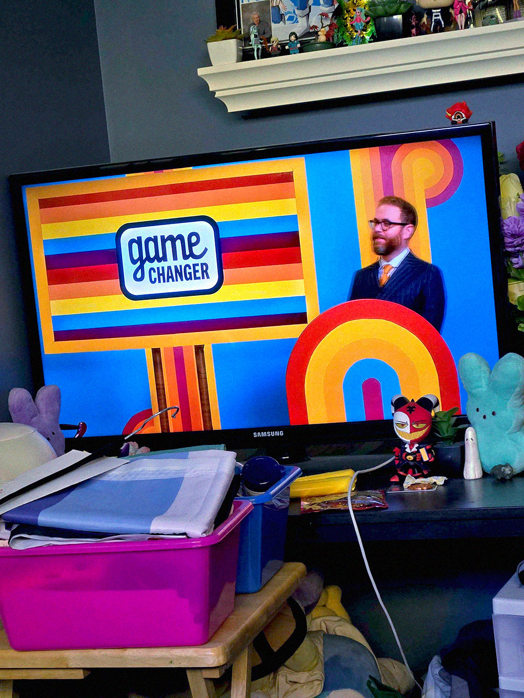

Alright, Finn’s taking a nap in my bed. I’m being totally normal about the whole thing too, not freaking out at all. (Why am I even lying to myself in this journal, I’m freaking out!)
Everyone’s finals have happened and classes are over for the summer. I assumed I’d have a boring four months of playing video games, watching anime, and working, like I’d expect. But what did I find outside my dorm door this morning? A very excited Finn! He decided that we were going to hang out whenever we could all summer and have fun together. So, I let him in, got myself ready for the day, since I wasn’t planning on going anywhere, and the two of us hung out.
Fuck I have such a hard time hanging out with him still. My heart does flips when I’m around him, but I can’t help myself. He’s the first person who’s ever shown this sort of compassion and care for him, how could I let him go?
Anyways, after being out, we decided to watch some TV together and he fell asleep in the middle of the show. He’s so cute, there’s no way I could disturb him. I wish someone as amazing as him could have feelings for me. I wish that we could be something more than we are, but that’s a dream for me. I’ll never get to be in love.
Even if he did like me, we wouldn’t be a good couple. My mental health is so much, he’d get sick of me after some time. I honestly waiting for the day that him and Vega are sick of me and throw me away. But until then, I mid as well enjoy the little bit of happiness I get with them.
Cedar